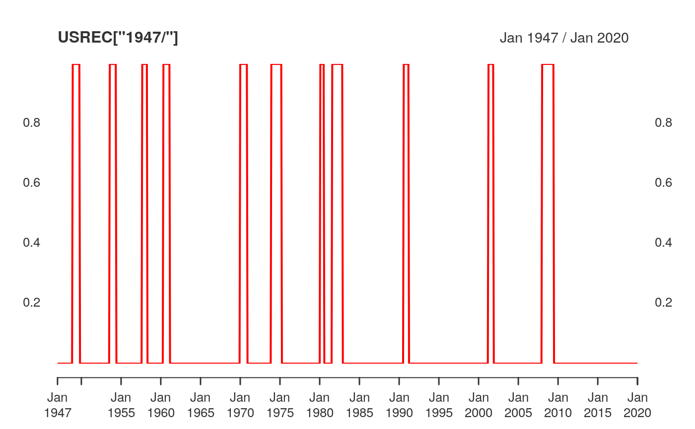

USREC NBER based Recession Indicators for the United States from the
period following the peak through the trough.
data(USREC)An xts object containing monthly observations of
NBER-based Recession Indicators.
Recession Indicators Series (Not a press release)
Not Seasonally Adjusted
Monthly
Binary indicator (1 = recession, 0 = expansion)
1854-12-01 to 2025-07-01
Federal Reserve Bank of St. Louis https://fred.stlouisfed.org/data/USREC
This time series is an interpretation of U.S. Business Cycle Expansions and Contractions data provided by The National Bureau of Economic Research (NBER) at http://www.nber.org/cycles/cyclesmain.html.
The series is composed of dummy variables that represent periods of expansion and recession. A value of 1 indicates a recessionary period, while a value of 0 indicates an expansionary period.
The NBER identifies months and quarters of turning points without designating an exact date within the period that turning points occurred. For this time series, the recession begins the first day of the period following a peak and ends on the last day of the period of the trough.
Three methods of interpretation are used for converting peak/trough dates into shaded recession data:
Midpoint method — recession spans midpoints of peak and trough.
Trough method — recession spans from period following the peak through the trough (used for this series and in FRED).
Peak method — recession spans from peak through the period preceding the trough.
data(USREC)
USREC["2007/2009"]
#> USREC
#> 2007-01-01 0
#> 2007-02-01 0
#> 2007-03-01 0
#> 2007-04-01 0
#> 2007-05-01 0
#> 2007-06-01 0
#> 2007-07-01 0
#> 2007-08-01 0
#> 2007-09-01 0
#> 2007-10-01 0
#> 2007-11-01 0
#> 2007-12-01 0
#> 2008-01-01 1
#> 2008-02-01 1
#> 2008-03-01 1
#> 2008-04-01 1
#> 2008-05-01 1
#> 2008-06-01 1
#> 2008-07-01 1
#> 2008-08-01 1
#> 2008-09-01 1
#> 2008-10-01 1
#> 2008-11-01 1
#> 2008-12-01 1
#> 2009-01-01 1
#> 2009-02-01 1
#> 2009-03-01 1
#> 2009-04-01 1
#> 2009-05-01 1
#> 2009-06-01 1
#> 2009-07-01 0
#> 2009-08-01 0
#> 2009-09-01 0
#> 2009-10-01 0
#> 2009-11-01 0
#> 2009-12-01 0
plot(USREC["1947/"], grid.col = "white", col = "red")
